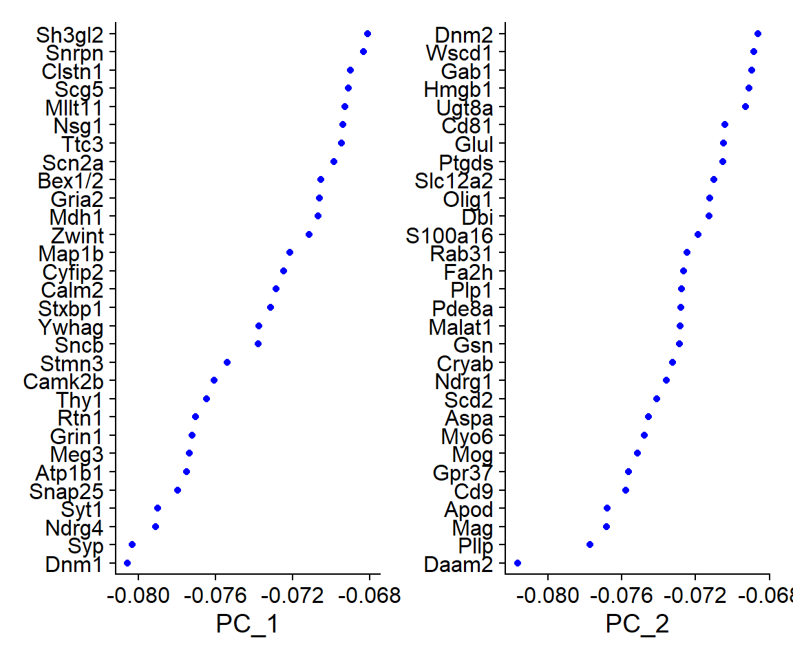
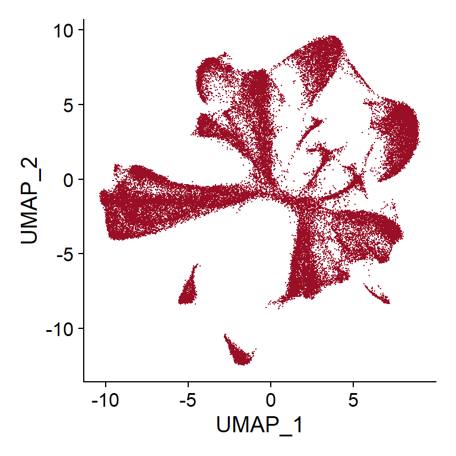

Example - CosMx Data Dimensional reduction with Log normalized object
LGA
02 septiembre 2025
Last updated: 2025-09-02
Checks: 7 0
Knit directory: CosMx_pipeline_LGA/
This reproducible R Markdown analysis was created with workflowr (version 1.7.1). The Checks tab describes the reproducibility checks that were applied when the results were created. The Past versions tab lists the development history.
Great! Since the R Markdown file has been committed to the Git repository, you know the exact version of the code that produced these results.
Great job! The global environment was empty. Objects defined in the global environment can affect the analysis in your R Markdown file in unknown ways. For reproduciblity it’s best to always run the code in an empty environment.
The command set.seed(20250517) was run prior to running
the code in the R Markdown file. Setting a seed ensures that any results
that rely on randomness, e.g. subsampling or permutations, are
reproducible.
Great job! Recording the operating system, R version, and package versions is critical for reproducibility.
Nice! There were no cached chunks for this analysis, so you can be confident that you successfully produced the results during this run.
Great job! Using relative paths to the files within your workflowr project makes it easier to run your code on other machines.
Great! You are using Git for version control. Tracking code development and connecting the code version to the results is critical for reproducibility.
The results in this page were generated with repository version 9bc387c. See the Past versions tab to see a history of the changes made to the R Markdown and HTML files.
Note that you need to be careful to ensure that all relevant files for
the analysis have been committed to Git prior to generating the results
(you can use wflow_publish or
wflow_git_commit). workflowr only checks the R Markdown
file, but you know if there are other scripts or data files that it
depends on. Below is the status of the Git repository when the results
were generated:
Ignored files:
Ignored: .Rhistory
Ignored: .Rproj.user/
Ignored: NBClust-Plots/
Ignored: analysis/.Rhistory
Ignored: data/seuAtoMx/
Ignored: output/processed_data/Log/
Ignored: output/processed_data/RC/
Ignored: output/processed_data/SCT/
Ignored: output/processed_data/exprMat_unfiltered.RDS
Ignored: output/processed_data/fov_positions_unfiltered.RDS
Ignored: output/processed_data/metadata_unfiltered.RDS
Ignored: output/processed_data/negMat_unfiltered.RDS
Ignored: output/processed_data/seu_filtered.RDS
Ignored: output/processed_data/seu_semifiltered.RDS
Untracked files:
Untracked: output/performance_reports/
Unstaged changes:
Modified: CosMx_pipeline_LGA.Rproj
Modified: _workflowr.yml
Note that any generated files, e.g. HTML, png, CSS, etc., are not included in this status report because it is ok for generated content to have uncommitted changes.
These are the previous versions of the repository in which changes were
made to the R Markdown
(analysis/6.1_Log_dimensional_reduction.Rmd) and HTML
(docs/6.1_Log_dimensional_reduction.html) files. If you’ve
configured a remote Git repository (see ?wflow_git_remote),
click on the hyperlinks in the table below to view the files as they
were in that past version.
| File | Version | Author | Date | Message |
|---|---|---|---|---|
| Rmd | 78c8449 | lga-uoc | 2025-09-02 | Add Rmds files in analysis |
Dependencies
library(data.table) # Efficient data management
library(here) # Enhanced file referencing in project-oriented workflows
library(dplyr) # For the use of pipes %>%
library(kableExtra) # For table formatting
library(Seurat) # Seurat object
library(ggplot2) # Graphics
library(patchwork) # Layout graphics
library(viridis) # Viridis color scaleLoad the data
First of all, data needs to be loaded into the session. For this script, only the normalized/transformed Seurat object is needed.
# Indicate the object folder
folder <- "Log" # Choose between "RC", "Log" or "SCT"
if (!folder %in% c("RC", "Log", "SCT")) {
stop("The selected folder is invalid, choose: 'RC', 'Log' or 'SCT'")
}
# Load Seurat object
name <- paste0("seu_", folder, ".RDS")
seu <- readRDS(here("output","processed_data",folder,name))PCA
Now that the data is normalized and scaled, the next step is to perform linear dimensional reduction with Principal Components Analysis, or PCA.
One of the benefits of using a Seurat object along the pipeline, apart from keeping the data organised, is that well established and extended packages, like Seurat, offer a great variety of functions that cover the most important steps of a genomic analysis, specifically designed to work with the object. Therefore, in this pipeline, PCA will be executed using the Seurat function “RunPCA()”, followed by different visualizations performed with different functions of this same package.
One way of exploring the resulting PCs would be to visualize the genes that are contributing the most to each PC, for example, by printing the resulting list of genes with most positive and negative loadings or using “VizDimLoadings()”.
PC_ 1
Positive: Apoe, Glul, Apod, Atp1a2, Ptgds
Negative: Dnm1, Syp, Ndrg4, Syt1, Snap25
PC_ 2
Positive: Snap25, Atp1b1, Rtn1, Syp, Syt1
Negative: Daam2, Pllp, Mag, Apod, Cd9
PC_ 3
Positive: Atp1a2, Gja1, Cst3, Clu, Gpr37l1
Negative: Mog, Mag, Plp1, Ugt8a, Fa2h
PC_ 4
Positive: Nrgn, Cldn5, Flt1, Itm2a, Esam
Negative: Aldoc, Slc6a11, Ndrg2, Slc6a1, Nap1l5
PC_ 5
Positive: Nrgn, Gpm6b, Malat1, Gpr37l1, Gria2
Negative: Bsg, Itm2a, Flt1, Sparc, Cldn5  The loadings for each PC show which genes are driving the variance in the data along that axis. In this case, for example, cells with a high score for PC 1 would have a higher expression of genes like Apoe, Glul, Apod, Atp1a2, Ptgds, while cells with a lower score for PC 1, would instead have higher expression of genes like Dnm1, Syp, Ndrg4, Syt1, Snap25.
Some other the visualization tools that allow for easy exploration of the resulted PCs are “DimPlot()”, “DimHeatmap()” and “ElbowPlot()”:
PCA DimPlot
## Code adapted from CosMxLite vignette
# DimPlot
DimPlot(seu, reduction = "pca", raster = FALSE) +
ggtitle("PCA DimPlot") +
theme(plot.title = element_text(hjust = 0.5, face = "bold")) +
NoLegend()In this plot, cells that are far from each other in the X-axis (PC 1) are more different than cells separated the same distance in the Y-axis (PC 2). In this case, no clear differentiations are observed.
PCA DimHeatmap
## Code adapted from CosMxLite vignette
# DimHeatmap
heat_list <- DimHeatmap(seu, dims = 1:6, cells = 500, balanced = TRUE,
fast = FALSE, combine = TRUE)
# Add individual titles
titles <- paste0("PC", 1:6)
heat_list <- lapply(seq_along(heat_list), function(i) {
heat_list[[i]] + ggtitle(titles[i])
})
# Combine with global title
wrap_plots(heat_list, guides = "collect") +
plot_annotation(
title = "Multiple PCA DimHeatmaps",
theme = theme(plot.title = element_text(hjust = 0.5, face = "bold"))
) &
theme(legend.position = "right") This type of plots represent cells (ranked through its PC score) in
columns and genes (top loadings) in rows, the color in each intersection
represents the expression level of the gene in the cell. By setting the
“cells” parameter to a number, such as 500, the plot only shows the most
extreme cells of each end. Therefor, the more clear the “blocks” of high
vs low expressing genes, the more likely that PC is capturing a major
biological distinction. In this case, for example, most PCs do not have
good differentiated blocks, instead they all look pretty fuzzy.
This type of plots represent cells (ranked through its PC score) in
columns and genes (top loadings) in rows, the color in each intersection
represents the expression level of the gene in the cell. By setting the
“cells” parameter to a number, such as 500, the plot only shows the most
extreme cells of each end. Therefor, the more clear the “blocks” of high
vs low expressing genes, the more likely that PC is capturing a major
biological distinction. In this case, for example, most PCs do not have
good differentiated blocks, instead they all look pretty fuzzy.
Elbow Plot
Finally, the Elbow Plot, or Scree Plot, ranks PCs based on how much variance is explained by them. This type of plot is usually used to determine the number of PCs that would be consider to “represent” the dataset, leaving out those which could be considered to represent technical noise.
Technically, the elbow method determines the optimal PC number in the “elbow” of the curve. However, this might be subjective and there are some quantitative approaches that can help determine the appropriate number (see an example in the Harvard Chan Bioinformatics Core (HBC) scRNA-seq trainning).
## Code adapted from hbctraining.github.io
# Metric 1 (first PC with <5% variance but >90% of cumulative variance)
pct <- seu[["pca"]]@stdev / sum(seu[["pca"]]@stdev) * 100
cumu <- cumsum(pct)
m1 <- which(cumu > 90 & pct < 5)[1]
# Metric 2 (first PC with <0.1% variance difference with the consecutive PC)
m2 <- sort(which((pct[1:length(pct) - 1] - pct[2:length(pct)]) > 0.1),
decreasing = T)[1] + 1
## Code adapted from CosMxLite vignette
# Elbow plot
npcs <- 30 # Select the PCs to use
ElbowPlot(seu, ndims = 50) +
geom_vline(xintercept = m1, linetype = "dotted", color = "blue") +
annotate("text", x = m1, y = 10, label = "m1", hjust = -0.5, color = "blue") +
geom_vline(xintercept = m2, linetype = "dotted", color = "blue") +
annotate("text", x = m2, y = 10, label = "m2", hjust = -0.5, color = "blue") +
ggtitle("Elbow Plot Metrics") +
theme(plot.title = element_text(hjust = 0.5, face = "bold"))In this case, the elbow might be observed around 15-25 PCs and the calculated metrics are found in PCs 43 or 15 PCs. In the HBC training, they suggest selecting the lower those metrics. However, it is usually preferable to err on the higher side, so for this example the number of selected PCs will be 30, as an intermediate between both (although it is recommended to test downstream analysis using different numbers of PCs).
## Code adapted from CosMxLite vignette
# Elbow plot
ElbowPlot(seu, ndims = 50) +
geom_vline(xintercept = npcs, linetype = "dotted", color = "red") +
geom_hline(yintercept = seu@reductions$pca@stdev[npcs], linetype = "dotted", color = "red") +
ggtitle("Elbow Plot") +
theme(plot.title = element_text(hjust = 0.5, face = "bold"))UMAP
In contrast to PCA, where there are up to 50 PCs generated through the algorithm, UMAP is a non-linear dimensional reduction method that generates only two coordinates which can be visualize in a 2D plot. In standard single-cell expression analysis, UMAP is usually calculated from the selected PCs previously calculated.
UMAP DimPlot
## Code adapted from CosMxLite vignette
# UMAP DimPlot
DimPlot(seu, reduction = "umap", cols = "stepped", raster = FALSE) + NoLegend() Currently, no clusters have been calculated, so every cell is represented as part of one same group. However, at this point, UMAP plotting can still be useful to visualize how are cells distributed based on different variables, such as tissue (if there is more than one tissue on the slide), slide ID (if there is more than one slide), total counts or stains of interest.
# Code inspired by Scratch Space vignette
# Random point order so no tissue or slide is on top by default
random <- sample(Cells(seu))
# By tissue (shown as an example, not applicable to this dataset)
# p1 <- DimPlot(seu, reduction = "umap", cells = random, cols = "stepped",
# raster = FALSE, group.by = "tissue") +
# ggtitle("By tissue")
# By slide ID (shown as an example, not applicable to this dataset)
# p2 <- DimPlot(seu, reduction = "umap", cells = random, cols = "stepped",
# raster = FALSE, group.by = "slide_ID_numeric") +
# ggtitle("By Slide ID")
## By total counts
seu$log_nCount_RNA <- log2(1 + seu$nCount_RNA)
p3 <- FeaturePlot(seu, reduction = "umap", cells = random,
features = "log_nCount_RNA") +
scale_color_viridis_c(option = "B") +
ggtitle("By Total Counts")
## By DAPI stain
seu$log_DAPI <- log2(1 + seu$Mean.DAPI)
p4 <- FeaturePlot(seu, reduction = "umap", cells = random,
features = "log_DAPI") +
scale_color_viridis_c(option = "B") +
ggtitle("By DAPI stain")
# Arrange plots
p3 | p4This type is visualizations would help to determine if any technical factor is influencing the data, i.e. batch effect related to the cells being in different slides. For example, in this case, it can be seen that all the cells with lower total counts are grouped in the middle of the UMAP, which could indicate that further filtering would be needed.
Performance and Session Info
Performance Report
| Chunk | Time_sec | Memory_Mb |
|---|---|---|
| Libraries | 1.46 | 148.8 |
| LoadData | 2.73 | 772.7 |
| PCA | 15.77 | 20.1 |
| VizPCA1 | 0.48 | 11.5 |
| VizPCA2 | 2.64 | 8.0 |
| VizPCA3 | 1.77 | 6.3 |
| ElbowMetrics | 0.35 | 1.0 |
| ElbowPCA | 0.32 | 0.7 |
| UMAP | 66.76 | 3.5 |
| VizUMAP1 | 1.34 | 7.3 |
| VizUMAP2 | 2.84 | 17.4 |
| SavingSeuObj | 16.74 | 0.0 |
| Total | 113.20 | 997.3 |
R version 4.4.3 (2025-02-28 ucrt)
Platform: x86_64-w64-mingw32/x64
Running under: Windows 10 x64 (build 19045)
Matrix products: default
locale:
[1] LC_COLLATE=Spanish_Spain.utf8 LC_CTYPE=Spanish_Spain.utf8
[3] LC_MONETARY=Spanish_Spain.utf8 LC_NUMERIC=C
[5] LC_TIME=Spanish_Spain.utf8
time zone: Europe/Madrid
tzcode source: internal
attached base packages:
[1] stats graphics grDevices utils datasets methods base
other attached packages:
[1] viridis_0.6.5 viridisLite_0.4.2 patchwork_1.3.0 ggplot2_3.5.1
[5] SeuratObject_4.1.4 Seurat_4.4.0 kableExtra_1.4.0 dplyr_1.1.4
[9] here_1.0.1 data.table_1.17.0 workflowr_1.7.1
loaded via a namespace (and not attached):
[1] RColorBrewer_1.1-3 rstudioapi_0.17.1 jsonlite_1.8.9
[4] magrittr_2.0.3 spatstat.utils_3.1-5 farver_2.1.2
[7] rmarkdown_2.29 fs_1.6.5 vctrs_0.6.5
[10] ROCR_1.0-11 spatstat.explore_3.5-2 htmltools_0.5.8.1
[13] sass_0.4.9 sctransform_0.4.2 parallelly_1.41.0
[16] KernSmooth_2.23-26 bslib_0.8.0 htmlwidgets_1.6.4
[19] ica_1.0-3 plyr_1.8.9 plotly_4.11.0
[22] zoo_1.8-14 cachem_1.1.0 whisker_0.4.1
[25] igraph_2.1.2 mime_0.12 lifecycle_1.0.4
[28] pkgconfig_2.0.3 Matrix_1.7-2 R6_2.5.1
[31] fastmap_1.2.0 fitdistrplus_1.2-4 future_1.34.0
[34] shiny_1.10.0 digest_0.6.37 colorspace_2.1-1
[37] ps_1.8.1 rprojroot_2.0.4 tensor_1.5.1
[40] irlba_2.3.5.1 labeling_0.4.3 progressr_0.15.1
[43] spatstat.sparse_3.1-0 httr_1.4.7 polyclip_1.10-7
[46] abind_1.4-8 compiler_4.4.3 withr_3.0.2
[49] MASS_7.3-64 tools_4.4.3 lmtest_0.9-40
[52] httpuv_1.6.15 future.apply_1.11.3 goftest_1.2-3
[55] glue_1.8.0 callr_3.7.6 nlme_3.1-167
[58] promises_1.3.2 grid_4.4.3 Rtsne_0.17
[61] getPass_0.2-4 cluster_2.1.8 reshape2_1.4.4
[64] generics_0.1.3 gtable_0.3.6 spatstat.data_3.1-6
[67] tidyr_1.3.1 sp_2.2-0 xml2_1.3.6
[70] spatstat.geom_3.5-0 RcppAnnoy_0.0.22 ggrepel_0.9.6
[73] RANN_2.6.2 pillar_1.10.0 stringr_1.5.1
[76] later_1.4.1 splines_4.4.3 lattice_0.22-6
[79] survival_3.8-3 deldir_2.0-4 tidyselect_1.2.1
[82] miniUI_0.1.1.1 pbapply_1.7-4 knitr_1.49
[85] git2r_0.36.2 gridExtra_2.3 svglite_2.1.3
[88] scattermore_1.2 xfun_0.49 matrixStats_1.4.1
[91] stringi_1.8.4 lazyeval_0.2.2 yaml_2.3.10
[94] evaluate_1.0.1 codetools_0.2-20 tibble_3.2.1
[97] cli_3.6.3 uwot_0.2.3 xtable_1.8-4
[100] reticulate_1.40.0 systemfonts_1.1.0 munsell_0.5.1
[103] processx_3.8.4 jquerylib_0.1.4 Rcpp_1.0.13-1
[106] globals_0.16.3 spatstat.random_3.4-1 png_0.1-8
[109] spatstat.univar_3.1-4 parallel_4.4.3 listenv_0.9.1
[112] scales_1.3.0 ggridges_0.5.6 leiden_0.4.3.1
[115] purrr_1.0.2 rlang_1.1.4 cowplot_1.1.3